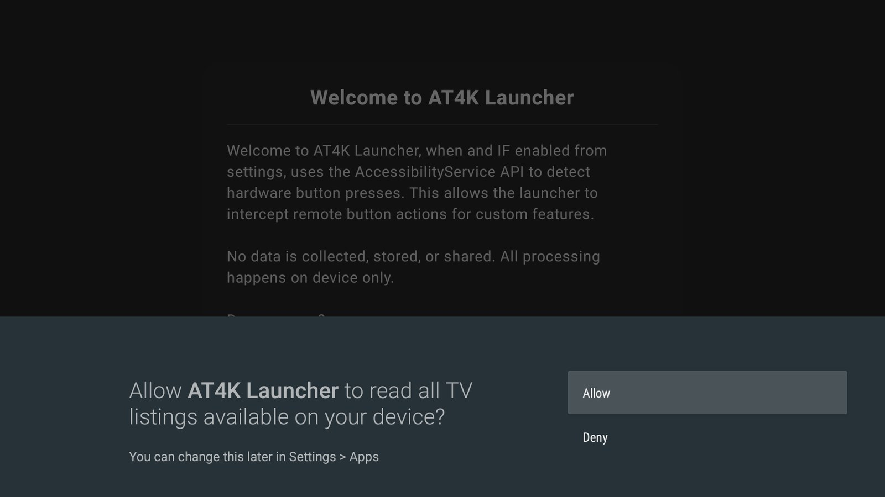

Good morning. Two days ago, Ryan Doyle posted that he had “hacked” his TV with Claude Code — no ads, no bloatware, no lag — by sending the agent the TV’s listing and asking whether it could. This morning Harshit Satija went further and put a small decision model between himself and the screen. I wanted to know what this looks like on the most ordinary hardware there is: a Xiaomi Mi TV Stick running Android TV 9 on 981 MB of usable RAM, of which only 254 MB was free when I started. No root, no custom firmware, no soldering. Just an official debugging switch, a laptop on the same Wi-Fi, and an agent that had to ask before it touched anything.
What: a hands-on test of an AI coding agent (Claude Code) debloating a 1 GB Android TV stick over Wi-Fi using Android’s built-in debugging bridge, adb — every change approved one by one, every app disabled rather than deleted, every step logged with an undo command.
When: October 18, 2026, one afternoon, after Ryan Doyle’s (October 16) and Harshit Satija’s (October 18) posts on agent-modified TVs.
Why it matters: consumer devices ship with official remote-control interfaces most owners never touch. Agents make those interfaces usable by anyone who can describe what they want — which is liberating, and also means the agent’s permission habits, and the device maker’s, suddenly matter a lot.
The setup took three taps
Every Android device carries a debugging interface called the Android Debug Bridge. On a TV you unlock it the slightly ridiculous way — tap Build seven times in the About menu — then switch on USB/network debugging in Developer options. The first time a computer connects, the TV puts up an Allow USB debugging? box with the computer’s key fingerprint. Tick “always allow,” press OK, and the laptop can now list packages, read and write settings, install apps and take screenshots over Wi-Fi.
The agent found the Android SDK already installed on my PC, confirmed the TV was answering on port 5555, and connected. Its first attempt came back unauthorized; it stopped and told me exactly what to tap on the TV. That pattern — try, hit a human gate, explain the gate, wait — repeated all afternoon, and it is the most important design decision in the whole exercise.
adb over Wi-Fi from a Windows laptop; agent: Claude CodePlain English before any change
My instructions were blunt. Before changing anything, list every app on the TV in plain English, split into three groups — safe to turn off, needed by the TV, and apps I use — and check free memory. Never touch Google Play, the keyboard, Bluetooth (the remote depends on it) or anything the picture output needs. Disable, don’t delete. Keep a list of every change and how to undo it.
The agent pulled roughly 90 system packages plus the user-installed apps and came back with a table a non-engineer could read. Package names like tv.alphonso.alphonso_eula became “ad tracking that records what you watch.” com.miui.tv.analytics became “sends usage data to Xiaomi.” It flagged three separate screensaver engines, a print spooler on a device with no printer, two bug-report senders, and a duplicate test copy of a remote-control plugin. It also volunteered a warning I hadn’t asked for: several sideloaded apps came from outside the Play Store, one with a placeholder com.example package name — a classic sign of software nobody has properly published or checked.
It separated a middle category, too: things that were safe to remove only depending on how I use the TV. Chromecast built-in was using ~76 MB, but disabling it would break casting. Google Assistant could go, but the microphone button on the remote would stop working. Those stayed on. That nuance is what made the list trustworthy enough to approve.
adb shell pm disable-user --user 0 com.miui.tv.analytics
→ Package com.miui.tv.analytics new state: disabled-user
Undo: adb shell pm enable com.miui.tv.analytics — written into the change log the moment it ran, alongside a one-click PowerShell script that reverses everything at once.
Twenty-two switches and a restart
I approved twenty apps from the safe list in one go; later I added Xiaomi’s PatchWall content catalogue and, eventually, the stock Google TV launcher once a replacement was in place. After a restart the agent did two checks I would not have thought to ask for: it confirmed every disabled package was still disabled, and it explicitly re-checked that the protected apps — Play Store, keyboard, Bluetooth, the remote service, the Amlogic display stack — were still on.
It was equally careful about the numbers. The first reading after the restart showed less free memory than before, because Play Services was busy syncing. Instead of reporting that, it sampled once a minute for five minutes and reported the settled value.
MemAvailable read from /proc/meminfo over ADB; bar width is the share of total RAM. The cleanup freed roughly 80 MB — about a third more headroom. I then spent most of it on a prettier launcher and left YouTube and the Play Store cached in the background. A final pass launched every remaining app in turn: all opened in 1.0–6.3 seconds and none crashed or froze.
Where it got weird
The flicker that I caused. I had asked for all animations off. The first replacement home screen, the open-source FLauncher, immediately developed a constantly flickering selection highlight. Screenshots couldn’t catch it — each one is a single frame — so the agent reasoned it through: a looping highlight animation running at an animator speed of zero restarts every frame. Restoring the animator speed while leaving window and transition animations off fixed it — and the same flicker returned on the next launcher the moment I set it back to zero. The common “turn all animations off for speed” tip has a cost on some launchers.
The permission I never granted. The Apple TV–style launcher I settled on, AT4K, kept showing a “Watch Next” row of suggested videos — exactly the recommendations I was trying to remove. The agent traced it to one runtime permission, READ_TV_LISTINGS, which reported granted=true although I had pressed Deny. The cause is in Fig. 01: on Android TV permission dialogs, the Allow button is focused by default, so pressing OK immediately grants it. On the second attempt I pressed Down first. The permission now reads granted=false, flags=[USER_SET], and the row is gone.
The TV fought back. I asked the agent to uninstall a streaming app I no longer use. Minutes later, while installing something else, it noticed the app was back. The package record told the story: installer com.xiaomi.mitv.updateservice, first installed at 09:58 — two minutes earlier. The manufacturer’s update service had silently pushed it back. The only way to stop that was to disable the update service itself, which also pauses firmware updates. The agent spelled out the trade-off before I agreed, and the log now says to re-enable it every few months.
“Installer: com.xiaomi.mitv.updateservice. First install time: 09:58:57.” — two lines of package metadata that turned a mysterious reappearing app into a clear, fixable cause.
—dumpsys package output on the test device, October 18, 2026
The caveats
- The agent was not flawless. It initially filed PatchWall under “needed by the TV” out of caution, and corrected itself only when I asked. Two of its own test scripts broke on PowerShell quirks and had to be rerun. Approval-per-change caught nothing dangerous, but it did catch mistakes.
- Debugging is a door. With network debugging on, any device on your Wi-Fi can ask to control the TV. Each new device still needs an on-screen Allow — the same Allow that, as above, is easy to press by accident. I switched it off when I was done.
- Updates are now manual. Disabling the update service stopped forced installs and also security patches. That is my trade-off to manage, not a free win.
- 1 GB is still 1 GB. The heaviest remaining app left ~189 MB free while running. Agents can remove bloat; they cannot add RAM.
- Disable, don’t delete. Nothing here touched the system partition. Every disabled package can be re-enabled with one command or from Settings → Apps, and the uninstalled stock apps can be restored with
cmd package install-existing.
What to watch next: content-first TVs
Harshit Satija’s post points to where this goes. After using Claude Code to strip his TV, he still disliked the app grid, so he placed Liquid AI’s small d1-3B decision model between himself and the screen: he says what he wants, and the model chooses the app and sends the ADB commands. It is the same plumbing this piece used, with the agent moved from setup time to every evening on the sofa.
“Content-first, not apps-first.”
— Harshit Satija, on putting a decision model in front of his TV- Where the model runs. A 1 GB stick cannot host a 3B model. Expect a small always-on box, a phone or a home server to become the TV’s “brain,” with the TV reduced to a display and a decoder.
- Standing permissions. A content-first setup needs debugging left on permanently. That makes the TV’s permission UX — default-focused Allow buttons included — part of your home network’s security model.
- Manufacturers’ counter-moves. A vendor that silently reinstalls partner apps will not love agents that remove them. Watch for debugging restrictions, or for vendors shipping their own agent hooks instead.
- Reverse engineering meets the living room. Our Deep Dive № 017 covered an agent-built native Plex client for LG TVs. Debloating is the gentle end of the same spectrum: agents making devices behave the way their owners want.
The TIMPS verdict
The interface was always there; agents made it usable. Nothing in this test was a hack. ADB, pm disable-user and runtime permissions are documented Android features. What changed is that a person can now describe the outcome in plain language and let an agent do the package archaeology.
Approval-per-change is the feature, not the friction. Twenty-two separate yeses felt slow for about five minutes. They turned out to be the reason I trusted the result — and the moments where the agent stopped to explain a trade-off (casting, voice search, firmware updates) were the most valuable part of the afternoon.
Your device is not the only actor. The most surprising finding wasn’t about the agent at all: the TV’s own update service reinstalled software behind my back, and its permission dialogs default to Allow. An agent working on a device has to treat the device’s own behaviour as something to verify, not assume.
The whole story in one line: an afternoon, a debugging switch and a careful agent turned a sluggish TV stick into a clean, reversible setup — and showed that the next fight over the living room may be between the agents owners bring and the software manufacturers ship.
Facts in this piece come from the author’s own test on October 18, 2026: package lists, memory readings, permission states and install records were read directly from the device over ADB, and every change was logged with its undo command. Details about other people’s projects are as reported in their public posts and repositories listed below. This is a first-person hands-on account published by an independent publication — not a manufacturer-endorsed procedure, not security advice, and not a recommendation to violate any service’s terms. If you try this, disable rather than delete, and keep your own undo log.
Sources
- Ryan Doyle (@doooyle) on X — hacking a TV with Claude Code: ads, bloatware, spyware and lag removed (Oct 16, 2026)
- Harshit Satija (@harshitsatija) on X — adding Liquid AI’s d1-3B decision model to a modified TV, “content-first, not apps-first” (Oct 18, 2026)
- Android Developers — Android Debug Bridge (adb) documentation
- Troypoint — AT4K Launcher overview: free vs premium features
- Hipertextual — AT4K Launcher brings an Apple TV–style interface to Android TV
- Android Authority — Arc Launcher, an open-source Apple TV–inspired launcher
One story a day,
explained properly.
New TIMPS deep dives land regularly — paired with the five-signal PostCard every morning. Free forever.